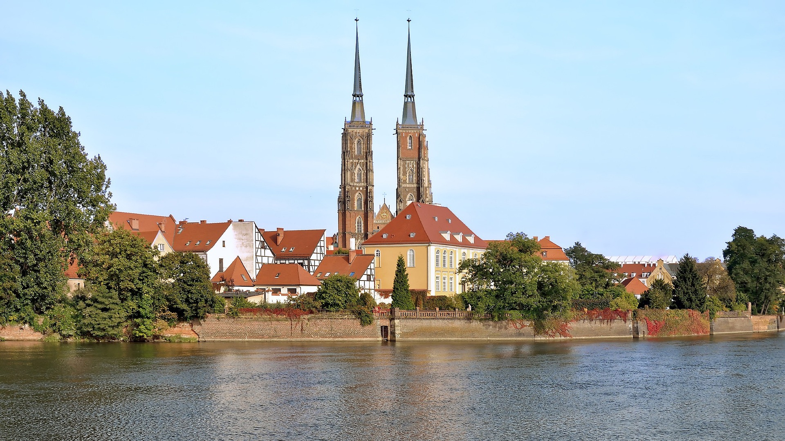
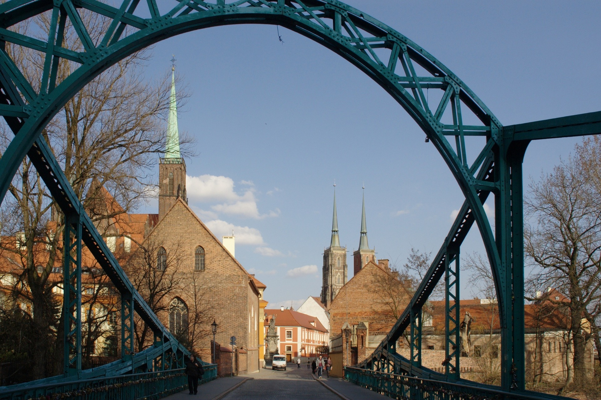
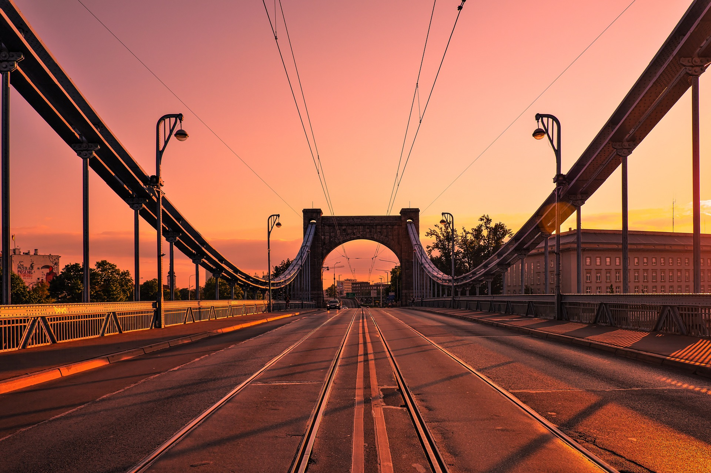
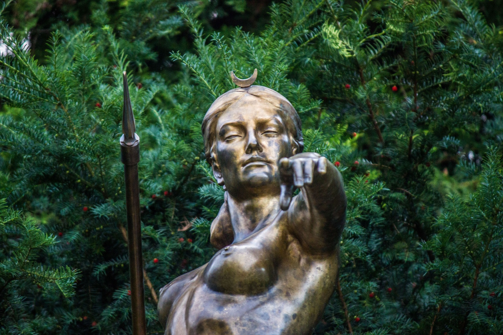

Trasy wycieczkowe
Trasa: Największe atrakcje turystyczne Wrocławia
Turystyczne przeboje Wrocławia związane są z wielowiekową historią miasta i rozrzucone są po jego najdalszych zakątkach. W czasie tej wycieczki zobaczymy najstarszą część miasta z Ostrowem Tumskim, Wyspami Odrzańskimi i Rynkiem. Następnie przeniesiemy się w okolice Hali Stulecia, gdzie zobaczymy Ogród Japoński, Multimedialną Fontannę na Pergoli, ZOO z Afrykarium. Na zakończenie pojedziemy zobaczyć przepiękną panoramę miasta z 49 piętra drapacza chmur SKYTOWER.
Trasa: Wrocław Piastów
Polska Dynastia Piastów władała Wrocławiem tylko w latach 990 – 1335. W ponad tysiącletniej historii miasta nie jest to zatem okres zbyt długi, ale wystarczający, by pozostawić na trwałe ślad w tkance miejskiej grodu nad Odrą. Na tej trasie znajduje się Ostrów Tumski, Wyspa Piasek, Mauzoleum Piastów Śląskich i okolice Rynku. Przybliżymy sobie historię piastowskiego Wrocławia i zastanowimy się dlaczego tak szybko przeszedł pod panowanie Czech.
Trasa: Architektura Wrocławia
We Wrocławiu, tak jak w podręczniku architektury, prześledzić można wszystkie najważniejsze style architektoniczne. Od romanizmu i gotyku, poprzez architekturę renesansu, baroku, klasycyzmu, do neostylów, modernizmu i architektury tej najbardziej współczesnej, z najwyższym budynkiem mieszkalnym w Polsce włącznie – Sky Tower. Proponuję wyprawę w przeszłość, która pozwala poznać i zrozumieć zmiany w architekturze na przykładzie Wrocławia.
Trasa: Legendy Wrocławia
Proponuję przechadzkę po mieście śladem najpiękniejszych wrocławskich legend i podań. Poznawanie zabytkowych budynków, kościołów bądź uliczek, od których roi się we Wrocławiu, jest nie tylko ciekawsze, ale i przyjemniejsze, gdy oczyma wyobraźni dostrzegamy na uliczkach, murach lub w lochach bohaterów starych podań. Wśród wielu wrocławskich legend nie brakuje zarówno tych wzruszających, jak i śmiesznych czy też mrożących krew w żyłach. Zapewniam, że kiedy słucha się tych opowieści patrząc na miejsca, w których bohaterowie legend mieli przeżywać swoje przygody, to na długo potem pozostają one jeszcze w pamięci.
